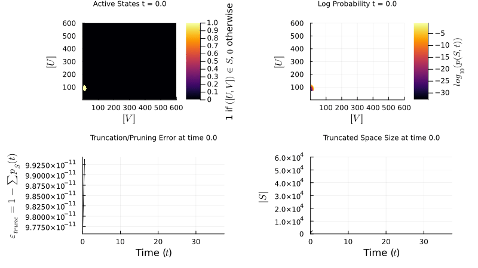

Aditya Dendukuri
PhD Candidate
Department of Computer Science
University of California, Santa Barbara
E-mail: aditya_dendukuri [at] ucsb [dot] edu
Research Interests:
Applied Mathematics/Scientific Computing, Data Science, Stochastic Modelling and Simulation.
Current Projects:
1. Efficient Stochastic Simulation Methods for Discrete Systems
My research focuses on developing efficient algorithms for the stochastic simulation of discrete systems, particularly biochemical reaction networks. These networks are inherently random, and their dynamics are governed by the Chemical Master Equation (CME):
\[ \frac{dP(\mathbf{x},t)}{dt} = \sum_{\mathbf{x}'\neq\mathbf{x}} \Bigl[W_{\mathbf{x}'\to\mathbf{x}}\,P(\mathbf{x}',t) - W_{\mathbf{x}\to\mathbf{x}'}\,P(\mathbf{x},t)\Bigr] \]
For example, the genetic toggle switch—two mutually repressing genes—is modeled by reactions such as:
\[ \varnothing \xrightarrow{\frac{\beta_A}{1+(B/K_B)^{n_B}}} A,\; A \xrightarrow{\delta_A} \varnothing \quad \text{and} \quad \varnothing \xrightarrow{\frac{\beta_B}{1+(A/K_A)^{n_A}}} B,\; B \xrightarrow{\delta_B} \varnothing \]
 This GIF shows how stochastic fluctuations drive the system between states. To handle the exploding state space, we employ the Finite State Projection (FSP) method, which truncates the CME to a finite set of states. The FSP formulation partitions the transition-rate matrix as:
\[ \mathbf{W} = \begin{pmatrix} \mathbf{Q} & \mathbf{R} \\ \mathbf{T} & \mathbf{U} \end{pmatrix} \quad \text{approximated by} \quad \widetilde{\mathbf{W}} = \begin{pmatrix} \mathbf{Q} & \mathbf{R} \\ \mathbf{0} & \mathbf{0} \end{pmatrix} \]
1. Markov Simulation of Nucleation (Crystal Formation)